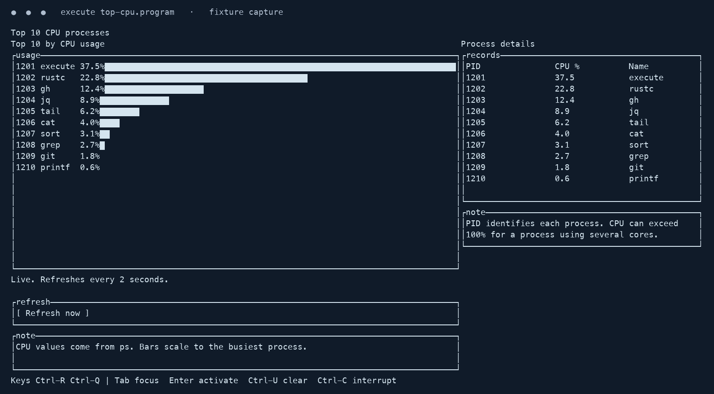
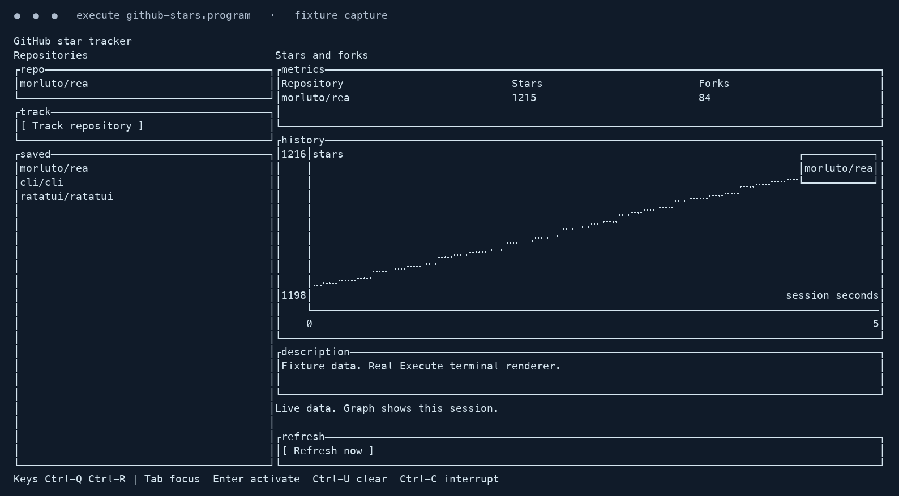

Unix does the work.
Call cat, git, jq, gh or any installed executable directly. Named applet manifests are optional adapters.
Your favorite command-line tools.
A script you can actually read.
Glue native applets into pipelines, AI decisions, always-on listeners and terminal apps. Rust handles the machinery. Your .program calls the shots.
Packaged 0.8.0 · source 0.9.0-dev · macOS + Linux
# A real native pipeline. Literal argv.
accept path as text with default "input.txt"
run "cat" with arguments [path]
pipe to "tr" with arguments ["[:lower:]", "[:upper:]"]
pipe to "wc" with arguments ["-l"]Call cat, git, jq, gh or any installed executable directly. Named applet manifests are optional adapters.
Inputs, branches, pipes, components and events stay visible. AI results return as data; your program chooses the next action.
Native OS pipes, supervised child processes, bounded captures, checkpoints and local live-state control. No per-app compilation step.
Loading actual repository scripts…
These are source files, not an in-browser execution sandbox. AI examples require their fixtures/manifests; desktop examples require their native tools.
Layout first. Components next.
Interfaces between them. All in one file.


Real runtime and widget rendering, captured from a PTY. Metrics are deterministic fixture data, not live CPU or GitHub measurements. Capture provenance ↗
Typed environment inputs replace a printenv → jq workaround. Same output, two fewer native helper processes.
Bash remains faster in this measurement. The improvement comes from removing two helper processes.
Read every raw sample ↗80 measured samples per variant / 10 excluded warmups.
Warm macOS arm64 caches. Fresh CLI process. Python launch/capture included. Every output and exit status checked; spawn traces recorded outside timing.
Evidence reflects the source candidate. These are separate test suites, not a combined replacement score. Unix cases include 100 exact matches and 10 explicit contract differences.
Classify. Validate. Branch.
TypeSafe Jev System One and LLM applets return results to ordinary program control flow. Provider choice, payloads, fixtures and live calls stay explicit.
Meet the AI applets ↗100 fixture-backed workflows. No API key needed for offline fixture runs. Live requests require credentials and provider access; ordinary scripts never invoke a model implicitly.
Requires a Rust toolchain and the native tools used by your script.
git clone https://github.com/monstercameron/NextGenScriptingLanguage.git
cd NextGenScriptingLanguage
cargo build --locked --release
printf 'hello\nworld\n' > input.txt
./target/release/execute examples/direct.programExecute is an evolving Unix glue language, not a certified Bash drop-in or a complete Omarchy replacement. Loops, jobs, external modules, richer redirection and real desktop acceptance remain open. Packaged 0.8.0 and source 0.9.0-dev have different capabilities.
See the production gates ↗